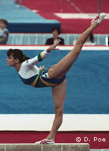

Luisa Parente (BRA)
1991 Pan American V and UB Champion

Luisa was born on February 1, 1973, in Rio de Janeiro. She began gymnastics at age 6 at the Clube de Regatas do Flamengo. A veteran of two Olympics and four World Championships, Luisa had her greatest international success at the 1991 Pan American Games, where she won 2 gold medals.
She retired from gymnastics in 1985 and became a lawyer. She's married to Brazilian basketball player Alexey Carvalho. They have 2 children, Manuela and Jose Alfonso. For more information, visit her website.
Competition Results
1986
American Cup: 11th AA (prelims)
Canadian Classic: 3rd AA, 3rd V, 3rd UB, 3rd FX
Intl. Mixed Pairs: 20th Team
Jr. Medico Cup: 3rd AA
1987
Pan American Games: 4th AA, 3rd UB
World Championships: 21st Team, 82nd AA (prelims)
1988
American Cup: 8th AA
Ibero-American Games: 4th AA
Intl. Mixed Pairs: 14th Team
Olympic Games: 35th AA
1989
American Cup: 10th AA (prelims)
Intl. Mixed Pairs: 16th Team
World Championships: 22nd Team, 179th AA (prelims)
1990
BRA Championships: 1st AA
Leverkusen Cup: 2nd Team, 3rd AA
1991
Pan American Games: 4th Team, 4th AA, 1st V, 1st UB
World Championships: 28th Team, 79th AA (prelims)
1992
American Cup: 8th AA
Intl. Mixed Pairs: 5th Team
Leverkusen Cup: 2nd Team, 6th AA
Olympic Games: 57th AA (prelims)
World Championships: 12th UB (semis), 14th B (semis)
1993
University Games: 5th AA, 2nd V, 8th UB
This page was created on September
16, 2005.
© Gymn Forum